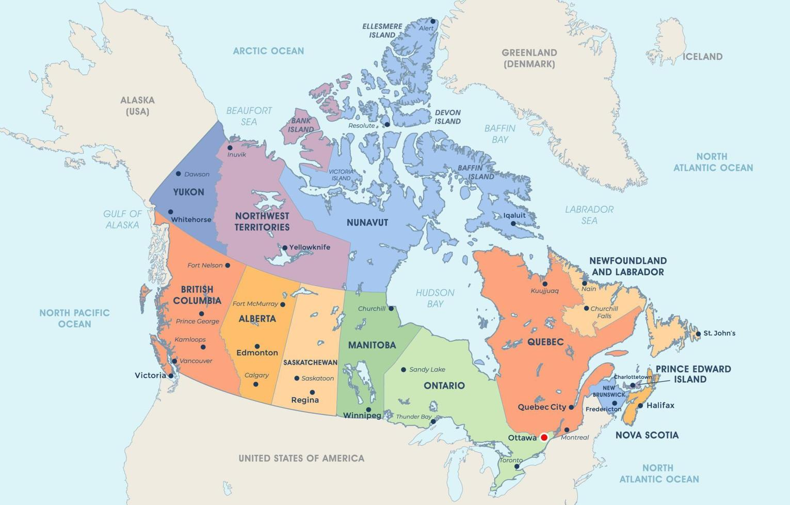
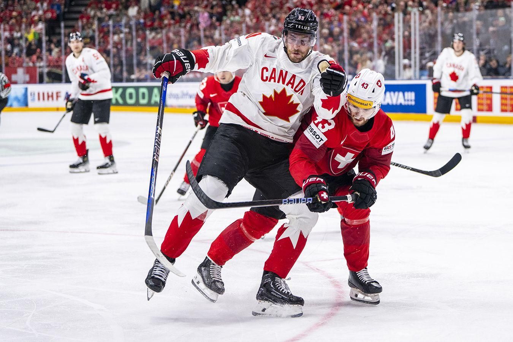
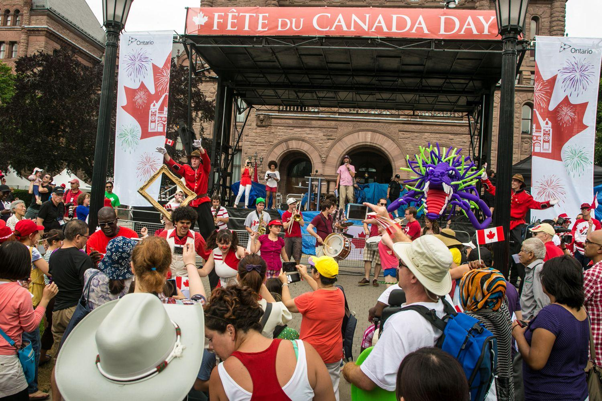
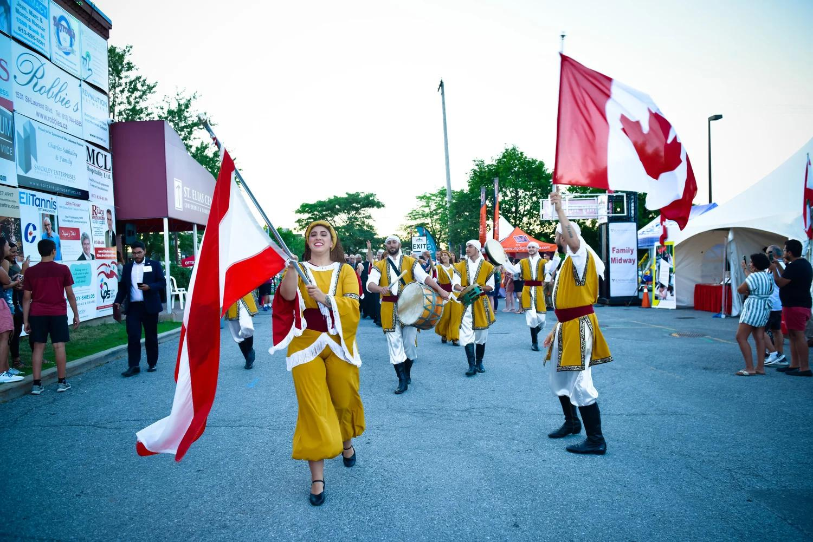
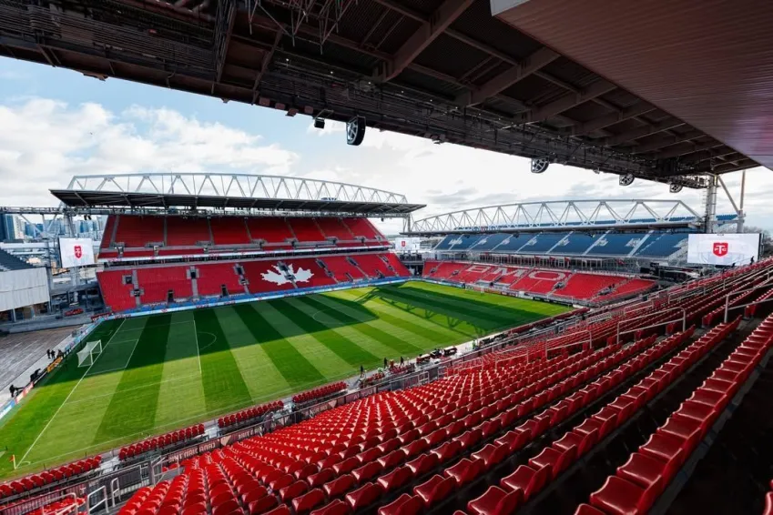
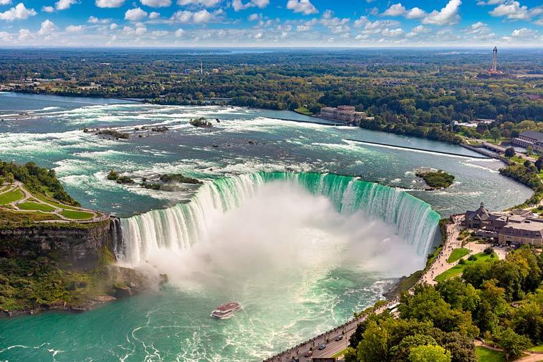
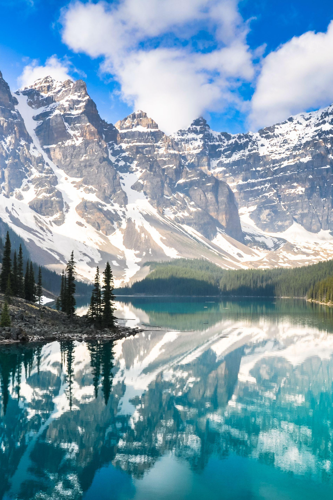
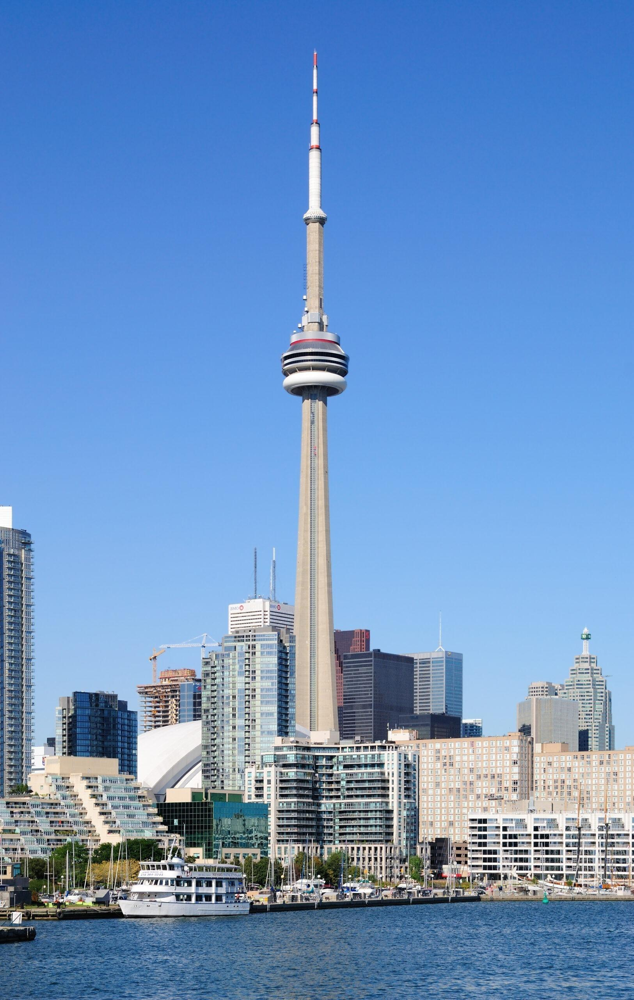
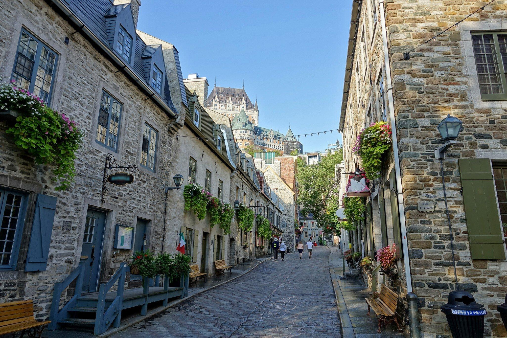

Sobre o País
O Canadá está localizado na América do Norte e é o segundo maior país do mundo em extensão territorial. Sua capital é Ottawa e sua população é de aproximadamente 40 milhões de habitantes. O país é conhecido por sua alta qualidade de vida, segurança e belas paisagens naturais.
Mapa do Canadá

Dados Geográficos
- Capital: Ottawa
- Continente: América do Norte
- Área: 9,98 milhões km²
- População: cerca de 40 milhões de habitantes
- Idioma: Inglês e Francês
- Moeda: Dólar Canadense (CAD)
Cultura e Tradições
A cultura canadense é influenciada principalmente pelas tradições britânicas, francesas e indígenas. O hóquei no gelo é o esporte mais popular do país. Os canadenses valorizam a diversidade cultural e celebram festivais durante todo o ano.



Infraestrutura para Eventos
O Canadá possui modernos estádios, aeroportos internacionais e uma excelente rede de transporte. Essas características permitem a realização de grandes eventos esportivos e culturais, recebendo visitantes de todo o mundo.

Pontos Turísticos
O Canadá possui atrações turísticas famosas como as Cataratas do Niágara, o Parque Nacional Banff, a Torre CN em Toronto e a cidade histórica de Quebec. Esses locais atraem milhões de turistas todos os anos.



